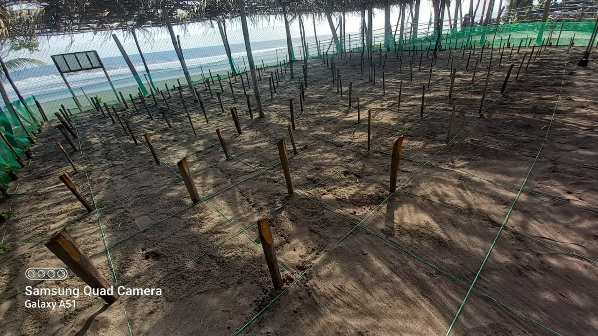
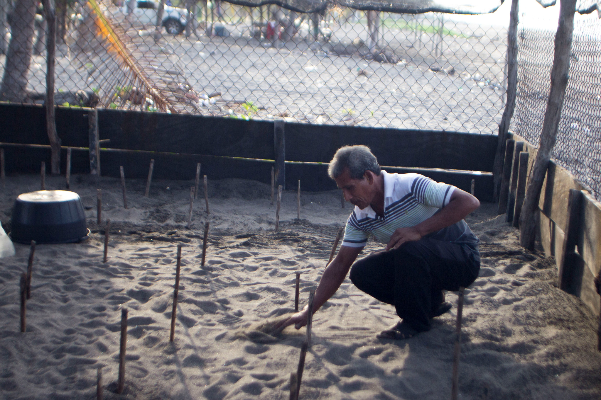
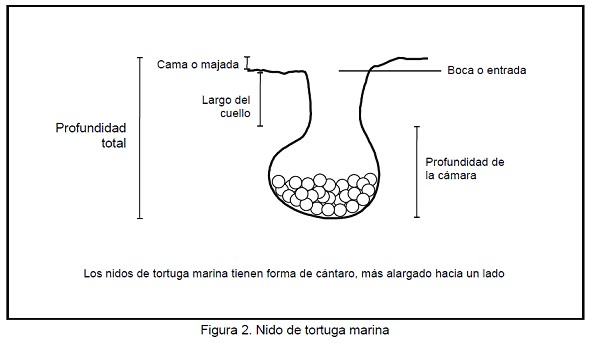

-se estima que por temporada se incuban alrededor de 48,000 huevos
En el proceso de Incubación se busca eclosionar la mayor cantidad de huevos posibles, para ello intentamos crear un ambiente optimo, ¡este no debe tener ni mucho sol ni mucha sombra!.

para este proceso se intenta recrear un nido natural de tortuga, cavando un hoyo de 45cm de profundidad y poniendo un estimado maximo de 13 docenas de huevos en cada nido.

-Los huevos de tortuga eclosionan entre los 50 y 55 días.